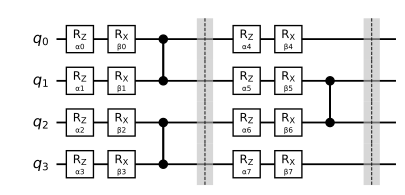

Appendix A — Exercises
\[ \newcommand{\ket}[1]{\left|#1\right\rangle} \newcommand{\bra}[1]{\left\langle#1\right|} \newcommand{\gate}[1]{\mathrm{#1}} \newcommand{\Tr}{\mathrm{Tr}} \]
This page collects the exercises of all published chapters. The label of each exercise links back to it in its chapter, where the surrounding text explains the notation and the references. The exercises of each new chapter are added here when it is published.
Chapter 1: Platforms, gates and measurement
Exercise 1.1 (Thermal excitation)
In thermal equilibrium at temperature \(T\), the excited and ground states of a qubit with frequency \(f\) are populated in the ratio \(p_1/p_0 = e^{-hf/k_B T}\) (the Boltzmann factor), where \(k_B\) is Boltzmann’s constant. Use \(h/k_B \approx 0.048\) K/GHz.
Compute \(p_1/p_0\) for a 5 GHz qubit at room temperature (300 K), at 1 K and at 10 mK.
Below which temperature is \(p_1/p_0\) smaller than \(10^{-3}\)?
Hint
Take the logarithm of both sides.
Exercise 1.2 (The PRX gate)
Show that \((\cos\varphi\, X + \sin\varphi\, Y)^2 = I\).
Hint
Expand the square, and use that \(X\) and \(Y\) anticommute.
Write \(\gate{PRX}(\theta,\varphi)\) as a \(2\times 2\) matrix.
Hint
Use Equation 1.1, which applies because of (a).
Check that \(\gate{PRX}(\theta,0) = R_X(\theta)\) and \(\gate{PRX}(\theta,\pi/2) = R_Y(\theta)\). Which rotation is \(\gate{PRX}(\theta,\pi)\)?
Exercise 1.3 (Turning one Pauli into another)
Let \(P\) and \(Q\) be Pauli strings that anticommute, \(PQ = -QP\).
Show that \(e^{-i\alpha P/2}\, Q\, e^{i\alpha P/2} = \cos\alpha\, Q - i\sin\alpha\, PQ\).
Hint
Write both exponentials with Equation 1.1, and use \(PQP = -Q\).
Show that \(R_Y(\pi/2)\) turns \(Z\) into \(X\), and that \(R_X(-\pi/2)\) turns \(Z\) into \(Y\).
Hint
Use (a), and the products of Pauli matrices.
Check that the circuit of Figure 1.8 implements \(e^{-i\theta\, Z\otimes Y\otimes X/2}\).
Hint
Use Equation 1.5, the identity for CZ in the text, and (b).
Draw a circuit of CZ gates and \(R_X\) or \(R_Y\) rotations for \(R_{ZZ}(\theta)\), and compare it with Figure 1.6.
Hint
Start from \(R_X(\theta)\) on the second qubit, conjugate it by CZ, then turn the remaining \(X\) into \(Z\).
Exercise 1.4 (Virtual Z gates)
Show that \(R_Z(\alpha)\, X\, R_Z(\alpha)^\dagger = \cos\alpha\, X + \sin\alpha\, Y\) and \(R_Z(\alpha)\, Y\, R_Z(\alpha)^\dagger = \cos\alpha\, Y - \sin\alpha\, X\).
Hint
Use Exercise 1.3 (a) with \(P = Z\).
Write the Hadamard gate, up to a global phase, as a single \(\gate{PRX}\) pulse followed by a \(Z\) rotation.
Hint
Write the Hadamard gate as \(R_Z(\alpha)\,R_Y(\beta)\,R_Z(\gamma)\) first, then use Equation 1.7.
Exercise 1.5 (The cost of distance)
Check Figure 1.11 on the four computational basis states.
We want to implement a CNOT between the qubits at opposite ends of a line of \(n\) qubits. If the qubits may stay in their new positions after the operation, how many CNOTs are needed? And if they must be returned to their original positions?
Hint
Each SWAP moves a state one step along the line.
Exercise 1.6 (SWAP from native gates)
On a device whose native gates are \(\gate{PRX}\) and CZ, a SWAP must be built from these.
Let \(A\) be a single-qubit unitary. Show that \((I\otimes A)\,\gate{CZ}\,(I\otimes A^\dagger)\) applies \(AZA^\dagger\) to the second qubit if the first is in \(\ket{1}\), and does nothing if it is in \(\ket{0}\).
Hint
Write \(\gate{CZ} = \ket{0}\bra{0}\otimes I + \ket{1}\bra{1}\otimes Z\).
Find a \(\gate{PRX}\) rotation \(A\) with \(AZA^\dagger = X\), and write a CNOT as one CZ and two \(\gate{PRX}\) gates.
Hint
Exercise 1.3 (b) gives a suitable \(A\).
Using Figure 1.11, write a SWAP with three CZs and \(\gate{PRX}\) gates only. How many \(\gate{PRX}\) pulses does it need?
Exercise 1.7 (A shot budget)
How many shots give a standard error of 0.01 when \(\langle P\rangle \approx 0.9\)? Compare with \(\langle P\rangle \approx 0\).
Hint
Solve Equation 1.9 for \(N\).
You need ten expectation values, each from its own circuit, each with a standard error of at most 0.005. Assume the worst case, \(\langle P\rangle = 0\). Estimate the total time on a superconducting device and on an ion trap. Which part of the time dominates on each?
Hint
Use the times per shot and per circuit of Table 1.5.
Exercise 1.8 (An error budget)
A device has the native gates \(\gate{PRX}\) and CZ, with virtual \(Z\) rotations. Its operations fail independently, with probability \(10^{-4}\) for a \(\gate{PRX}\) pulse, \(5\times10^{-3}\) for a CZ and \(10^{-2}\) for a measurement. On a line of 10 qubits, we run a brick-wall circuit: each layer applies \(R_Z\) and \(R_X\) to every qubit, followed by CZs between neighbouring qubits, on the pairs (1,2), (3,4), … in odd layers and (2,3), (4,5), … in even layers. Figure 1.12 shows two layers on four qubits. The circuit has 8 layers and ends by measuring all qubits.

Count the native operations of each kind, and estimate the probability that a run of the circuit has no error at all. Which kind of operation contributes most to the failures?
Hint
Which gates in Figure 1.12 need a pulse?
How does the answer to (a) change on a device without virtual \(Z\) rotations, where each \(R_Z\) needs a pulse with the same error as \(\gate{PRX}\)?
Roughly how many layers can the circuit have before the probability of a run without error drops below one half?
Hint
\((1-p)^n \approx e^{-np}\) for small \(p\).
Exercise 1.9 (Readout errors bias the estimate)
Suppose that the readout of each qubit reports the wrong bit with probability \(p\), independently in every shot and for both outcomes.
Show that the recorded sign \(s\) of a single-qubit \(Z\) measurement has expectation value \((1-2p)\langle Z\rangle\).
For a Pauli string \(P\) acting on \(k\) qubits, show that the recorded sign has expectation value \((1-2p)^k\langle P\rangle\).
Hint
The recorded sign is the true sign times one independent factor \(\pm 1\) per qubit.
Take \(p = 0.02\), \(k = 4\) and \(\langle P\rangle = 0.5\). Compare the bias of \(\bar s\) with its standard error for \(N = 10^3\) and for \(N = 10^5\) shots. When do more shots stop helping?
Hint
The standard error is given by Equation 1.9.
If \(p\) is known, how can the estimate be corrected? What does the correction do to the standard error?
Exercise 1.10 (Measuring in other bases)
A device has the native gates \(\gate{PRX}\) and CZ, and measures in the computational basis.
Which \(\gate{PRX}\) pulses must be applied before the measurement to estimate \(\langle X\otimes Y\otimes Z\rangle\)?
Hint
On each qubit, you need a rotation \(U\) with \(U P_j U^\dagger = Z\); see Exercise 1.3.
Can \(\langle X\otimes I\rangle\) and \(\langle X\otimes X\rangle\) be estimated from the same shots? And \(\langle X\otimes X\rangle\) and \(\langle Z\otimes Z\rangle\), if only single-qubit rotations are allowed before the measurement?